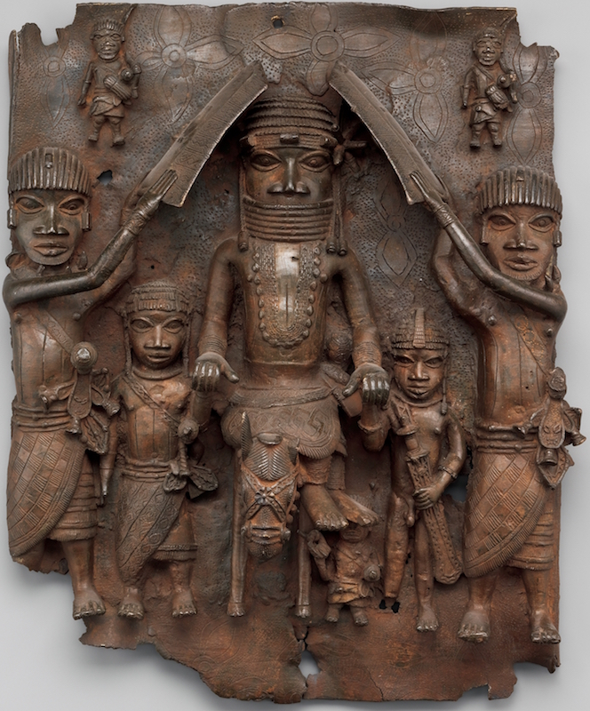
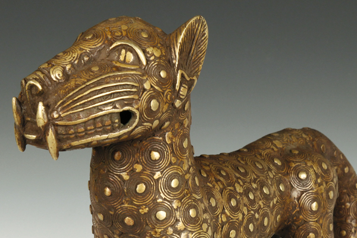

Benin Art Gallery
Explore iconic Benin Art below — each telling a story of power, spirituality, and artistic brilliance.

Equestrian-Oba-and-Attendants
This remarkable brass plaque, dated between 1550–1680, depicts an Oba (or king) and his attendants from the Benin Empire—a powerful kingdom located in present-day Nigeria. We know that the central figure is an Oba because of his distinctive coral beaded regalia. Also, attendants hold shields above his head, either to protect him from attack or possibly from the hot, tropical sun. This was a privilege only afforded to an Oba.

Head of a Queen Mother (Iyoba)
The head of a queen mother (Iyoba) is a striking brass sculpture from the Edo peoples of Benin, Nigeria, honoring the powerful role of the queen mother in royal society. Crafted between 1750 and 1800, this piece represents the iyoba, or mother of the oba (king), a title first bestowed upon Queen Idia, the mother of King Esigie in the 16th century. Idia played a pivotal role in preserving her son's reign during a time of political crisis, and her legacy established the queen mother as a revered figure in Benin's political and spiritual hierarchy.

The Benin ivory mask
The Benin ivory mask is a miniature sculptural portrait in ivory of Idia, the first Iyoba (Queen Mother) of the 16th century Benin Empire, taking the form of a traditional African mask. It stands as a powerful symbol of maternal strength, political wisdom, and divine protection. The mask’s serene expression and intricate detailing reflect the high status and reverence accorded to Queen Idia, whose strategic leadership helped secure her son's reign. Often worn or displayed during royal ceremonies, it embodies the spiritual and cultural legacy of the Benin Kingdom.

Luxe Bronze Royal Figures of Nigeria
Luxe Bronze Royal Figures of Nigeria This collection celebrates the regal artistry of Nigeria’s historic kingdoms — Benin (Edo) and Ife (Yoruba). Crafted between the 12th and 19th centuries, these bronze sculptures depict powerful figures like the Oba, Queen Mother, and Oni, symbolizing leadership, spirituality, and cultural pride. Each piece reflects the mastery of lost-wax casting and the deep reverence for royalty in African tradition.

The Benin Bronze Royal Leopard
The Benin Bronze Royal Leopard is a powerful symbol of kingship, justice, and divine authority in the Benin Kingdom. Crafted between the 17th and 19th centuries, this bronze sculpture represents the leopard, an animal closely associated with the Oba (king) of Benin. In Benin culture, the leopard is revered as the “king of the forest”, embodying both strength and restraint — qualities expected of a wise and just ruler.

Benin Bronzes (16th–19th Century)
The Benin Bronzes are a world-renowned collection of plaques, sculptures, and ceremonial objects created by the Edo peoples of the Benin Kingdom in present-day Nigeria. Cast in brass and bronze using the lost-wax technique, these artworks once adorned the royal palace of the Oba (king), celebrating court life, ancestral reverence, and divine kingship.Today, the Benin Bronzes stand as powerful symbols of African creativity, resilience, and the ongoing movement for cultural restitution.